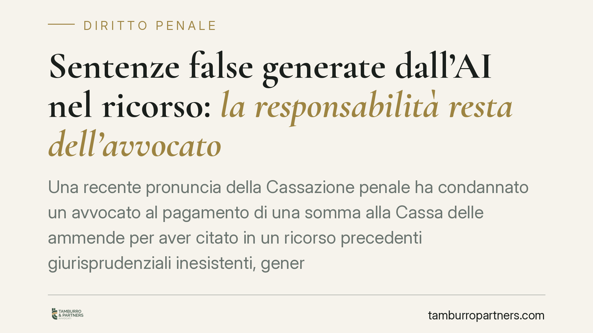

Sentenze false generate dall'AI nel ricorso: la responsabilità resta dell'avvocato
Una recente pronuncia della Cassazione penale ha condannato un avvocato al pagamento di una somma alla Cassa delle ammende per aver citato in un ricorso precedenti giurisprudenziali inesistenti, generati da un software di intelligenza artificiale. Il principio è netto: chi usa l'AI risponde integralmente dei suoi output. Un avvertimento che riguarda l'intera professione forense.

Il caso
Un difensore deposita un ricorso per cassazione a sostegno del quale richiama alcuni precedenti giurisprudenziali. Il problema: quei precedenti non esistono. Erano stati prodotti da un sistema di intelligenza artificiale generativa e inseriti nell'atto senza alcun controllo sulla loro effettiva esistenza.
Si tratta del fenomeno delle cosiddette "allucinazioni" dell'AI: il software costruisce citazioni dall'aspetto credibile — numero di sentenza, anno, sezione — ma del tutto inventate. La Cassazione penale ha ritenuto la condotta rilevante e ha condannato il professionista al versamento di una somma alla Cassa delle ammende, modulandola verso l'alto in ragione della gravità del comportamento.
*Nota redazionale: gli estremi esatti della pronuncia (numero e sezione) vanno verificati su banca dati ufficiale prima di ogni utilizzo dell'articolo come fonte. Preferiamo non riportare un numero non confermato proprio in un contributo dedicato alle citazioni inesistenti.*
Inquadramento normativo
Il riferimento è l'art. 616 del codice di procedura penale. La norma prevede che, in caso di inammissibilità o rigetto del ricorso, chi lo ha proposto possa essere condannato al pagamento di una somma a favore della Cassa delle ammende.
È importante chiarire la natura di questa somma: non è un risarcimento verso la controparte, né una spesa processuale ordinaria. È una sanzione dissuasiva, destinata a un fondo pubblico, che colpisce l'uso improprio dello strumento processuale. La sua funzione è scoraggiare i ricorsi temerari o infondati.
L'importo non è fisso. L'aumento rispetto alla misura base presuppone un profilo di colpa o malafede nella proposizione del ricorso: chi agisce con leggerezza o scientemente in modo distorto è esposto a una somma più alta. Secondo quanto emerge dalla motivazione della pronuncia, la Corte avrebbe individuato una serie di indici per graduare la sanzione nei casi di citazioni inventate — tra cui la verificabilità dell'errore, il grado di negligenza e l'impatto sul giudizio. Si tratta, va precisato, di criteri di matrice giurisprudenziale, non di una tassonomia prevista dalla legge.
Perché conta
Il messaggio della Corte è più ampio del singolo caso. L'intelligenza artificiale è uno strumento di lavoro, non un soggetto responsabile. Quando un professionista inserisce in un atto un contenuto prodotto dall'AI, ne assume la paternità piena.
Non esiste un "errore della macchina" opponibile al giudice o al cliente. La verifica delle fonti citate rientra nel dovere di diligenza del difensore, esattamente come avveniva prima dell'avvento di questi strumenti. L'AI accelera la ricerca, ma non trasferisce su di sé l'obbligo di controllo.
Implicazioni pratiche
Le conseguenze per il professionista si muovono su due piani distinti.
Sul piano processuale, oltre alla probabile inammissibilità o rigetto, c'è il rischio concreto della condanna alla Cassa delle ammende in misura aggravata.
Sul piano disciplinare, la condotta può integrare una violazione dei doveri di diligenza e lealtà. Il procedimento davanti al Consiglio dell'Ordine è autonomo rispetto all'esito del giudizio e può attivarsi indipendentemente dalla sanzione processuale. Un atto fondato su precedenti inventati tocca il nucleo della correttezza professionale.
Resta inoltre il profilo del rapporto con il cliente, che può subire un pregiudizio diretto da un ricorso compromesso da citazioni inesistenti.
Cosa fare in concreto
- Verifica sempre ogni citazione su banca dati ufficiale. Numero, anno, sezione e massima vanno controllati alla fonte prima del deposito. Nessuna eccezione.
- Non delegare all'AI la ricerca giurisprudenziale finale. Usa gli strumenti generativi per orientarti, mai come fonte autosufficiente di precedenti.
- Documenta il controllo. Conserva traccia delle verifiche effettuate: è una tutela in caso di contestazioni.
- Forma lo studio sull'uso corretto degli strumenti AI. Collaboratori e praticanti devono conoscerne i limiti, a partire dalle allucinazioni.
- Adotta un protocollo interno di revisione degli atti. Consigliamo una verifica incrociata delle fonti prima di ogni deposito, affidata a un soggetto diverso da chi ha redatto l'atto.
---
Contributo informativo a cura di Tamburro & Partners - Avv. Giuseppe Tamburro. Non costituisce parere legale.
Ogni condominio ha una storia a sé.
Se gestisci un'amministrazione e vuoi un confronto su una specifica questione condominiale, scrivi allo studio. Ti rispondiamo entro un giorno lavorativo.